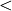

flopy.mf6.modflow.mfgwfnpf Module¶
-
class
flopy.mf6.modflow.mfgwfnpf.ModflowGwfnpf(model, loading_package=False, save_flows=None, alternative_cell_averaging=None, thickstrt=None, cvoptions=None, perched=None, rewet_record=None, xt3doptions=None, save_specific_discharge=None, icelltype=0, k=1.0, k22=None, k33=None, angle1=None, angle2=None, angle3=None, wetdry=None, fname=None, pname=None, parent_file=None)¶ ModflowGwfnpf defines a npf package within a gwf6 model.
Parameters: - model : MFModel
Model that this package is a part of. Package is automatically added to model when it is initialized.
- loading_package : bool
Do not set this parameter. It is intended for debugging and internal processing purposes only.
- save_flows : boolean
- save_flows (boolean) keyword to indicate that cell-by-cell flow terms will be written to the file specified with “BUDGET SAVE FILE” in Output Control.
- alternative_cell_averaging : string
- alternative_cell_averaging (string) is a text keyword to indicate that an alternative method will be used for calculating the conductance for horizontal cell connections. The text value for ALTERNATIVE_CELL_AVERAGING can be “LOGARITHMIC”, “AMT-LMK”, or “AMT- HMK”. “AMT-LMK” signifies that the conductance will be calculated using arithmetic-mean thickness and logarithmic-mean hydraulic conductivity. “AMT-HMK” signifies that the conductance will be calculated using arithmetic-mean thickness and harmonic-mean hydraulic conductivity. If the user does not specify a value for ALTERNATIVE_CELL_AVERAGING, then the harmonic-mean method will be used. This option cannot be used if the XT3D option is invoked.
- thickstrt : boolean
- thickstrt (boolean) indicates that cells having a negative ICELLTYPE are confined, and their cell thickness for conductance calculations will be computed as STRT-BOT rather than TOP-BOT.
- cvoptions : [dewatered]
- dewatered (string) If the DEWATERED keyword is specified, then the vertical conductance is calculated using only the saturated thickness and properties of the overlying cell if the head in the underlying cell is below its top.
- perched : boolean
- perched (boolean) keyword to indicate that when a cell is overlying a dewatered convertible cell, the head difference used in Darcy’s Law is equal to the head in the overlying cell minus the bottom elevation of the overlying cell. If not specified, then the default is to use the head difference between the two cells.
- rewet_record : [wetfct, iwetit, ihdwet]
- wetfct (double) is a keyword and factor that is included in the calculation of the head that is initially established at a cell when that cell is converted from dry to wet.
- iwetit (integer) is a keyword and iteration interval for attempting to wet cells. Wetting is attempted every IWETIT iteration. This applies to outer iterations and not inner iterations. If IWETIT is specified as zero or less, then the value is changed to 1.
- ihdwet (integer) is a keyword and integer flag that determines which equation is used to define the initial head at cells that become wet. If IHDWET is 0, h = BOT + WETFCT (hm - BOT). If IHDWET is not 0, h = BOT + WETFCT (THRESH).
- xt3doptions : [rhs]
- rhs (string) If the RHS keyword is also included, then the XT3D additional terms will be added to the right-hand side. If the RHS keyword is excluded, then the XT3D terms will be put into the coefficient matrix.
- save_specific_discharge : boolean
- save_specific_discharge (boolean) keyword to indicate that x, y, and z components of specific discharge will be calculated at cell centers and written to the cell-by-cell flow file, which is specified with “BUDGET SAVE FILE” in Output Control.
- icelltype : [integer]
- icelltype (integer) flag for each cell that specifies how saturated thickness is treated. 0 means saturated thickness is held constant; :math:`>`0 means saturated thickness varies with computed head when head is below the cell top; :math:`<`0 means saturated thickness varies with computed head unless the THICKSTRT option is in effect. When THICKSTRT is in effect, a negative value of icelltype indicates that saturated thickness will be computed as STRT-BOT and held constant.
- k : [double]
- k (double) is the hydraulic conductivity. For the common case in which the user would like to specify the horizontal hydraulic conductivity and the vertical hydraulic conductivity, then K should be assigned as the horizontal hydraulic conductivity, K33 should be assigned as the vertical hydraulic conductivity, and texttt{K22} and the three rotation angles should not be specified. When more sophisticated anisotropy is required, then K corresponds to the K11 hydraulic conductivity axis. All included cells (IDOMAIN 0) must have a K value greater than zero.
- k22 : [double]
- k22 (double) is the hydraulic conductivity of the second ellipsoid axis; for an unrotated case this is the hydraulic conductivity in the y direction. If K22 is not included in the GRIDDATA block, then K22 is set equal to K. For a regular MODFLOW grid (DIS Package is used) in which no rotation angles are specified, K22 is the hydraulic conductivity along columns in the y direction. For an unstructured DISU grid, the user must assign principal x and y axes and provide the angle for each cell face relative to the assigned x direction. All included cells (IDOMAIN 0) must have a K22 value greater than zero.
- k33 : [double]
- k33 (double) is the hydraulic conductivity of the third ellipsoid axis; for an unrotated case, this is the vertical hydraulic conductivity. When anisotropy is applied, K33 corresponds to the K33 tensor component. All included cells (IDOMAIN 0) must have a K33 value greater than zero.
- angle1 : [double]
- angle1 (double) is a rotation angle of the hydraulic conductivity tensor in degrees. The angle represents the first of three sequential rotations of the hydraulic conductivity ellipsoid. With the K11, K22, and K33 axes of the ellipsoid initially aligned with the x, y, and z coordinate axes, respectively, ANGLE1 rotates the ellipsoid about its K33 axis (within the x - y plane). A positive value represents counter-clockwise rotation when viewed from any point on the positive K33 axis, looking toward the center of the ellipsoid. A value of zero indicates that the K11 axis lies within the x - z plane. If ANGLE1 is not specified, default values of zero are assigned to ANGLE1, ANGLE2, and ANGLE3, in which case the K11, K22, and K33 axes are aligned with the x, y, and z axes, respectively.
- angle2 : [double]
- angle2 (double) is a rotation angle of the hydraulic conductivity tensor in degrees. The angle represents the second of three sequential rotations of the hydraulic conductivity ellipsoid. Following the rotation by ANGLE1 described above, ANGLE2 rotates the ellipsoid about its K22 axis (out of the x - y plane). An array can be specified for ANGLE2 only if ANGLE1 is also specified. A positive value of ANGLE2 represents clockwise rotation when viewed from any point on the positive K22 axis, looking toward the center of the ellipsoid. A value of zero indicates that the K11 axis lies within the x - y plane. If ANGLE2 is not specified, default values of zero are assigned to ANGLE2 and ANGLE3; connections that are not user- designated as vertical are assumed to be strictly horizontal (that is, to have no z component to their orientation); and connection lengths are based on horizontal distances.
- angle3 : [double]
- angle3 (double) is a rotation angle of the hydraulic conductivity tensor in degrees. The angle represents the third of three sequential rotations of the hydraulic conductivity ellipsoid. Following the rotations by ANGLE1 and ANGLE2 described above, ANGLE3 rotates the ellipsoid about its K11 axis. An array can be specified for ANGLE3 only if ANGLE1 and ANGLE2 are also specified. An array must be specified for ANGLE3 if ANGLE2 is specified. A positive value of ANGLE3 represents clockwise rotation when viewed from any point on the positive K11 axis, looking toward the center of the ellipsoid. A value of zero indicates that the K22 axis lies within the x - y plane.
- wetdry : [double]
- wetdry (double) is a combination of the wetting threshold and a flag to indicate which neighboring cells can cause a cell to become wet. If WETDRY  0, only a cell below a dry cell can cause the cell to become wet. If WETDRY 0, the cell below a dry cell and horizontally adjacent cells can cause a cell to become wet. If WETDRY is 0, the cell cannot be wetted. The absolute value of WETDRY is the wetting threshold. When the sum of BOT and the absolute value of WETDRY at a dry cell is equaled or exceeded by the head at an adjacent cell, the cell is wetted. WETDRY must be specified if “REWET” is specified in the OPTIONS block. If “REWET” is not specified in the options block, then WETDRY can be entered, and memory will be allocated for it, even though it is not used.
- fname : String
File name for this package.
- pname : String
Package name for this package.
- parent_file : MFPackage
Parent package file that references this package. Only needed for utility packages (mfutl*). For example, mfutllaktab package must have a mfgwflak package parent_file.
-
get_package(name=None)¶ Get a package.
Parameters: - name : str
Name of the package, ‘RIV’, ‘LPF’, etc.
Returns: - pp : Package object